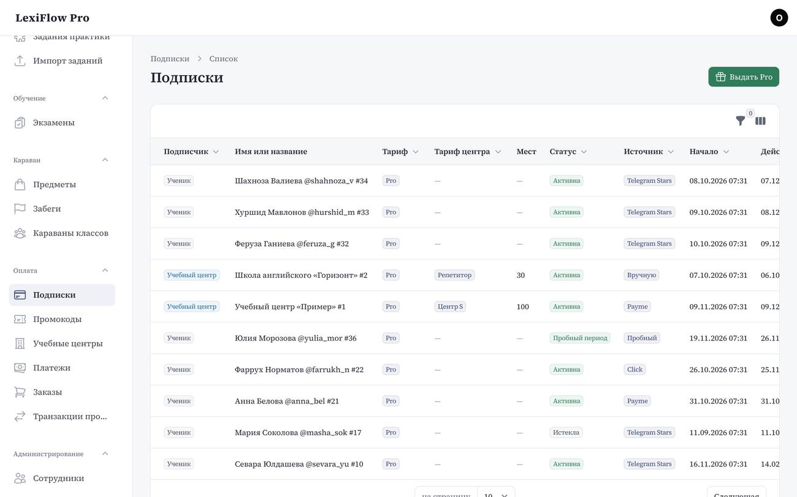
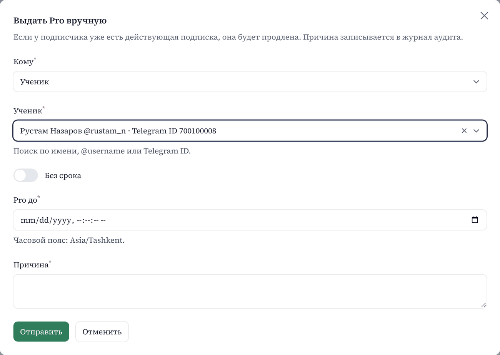
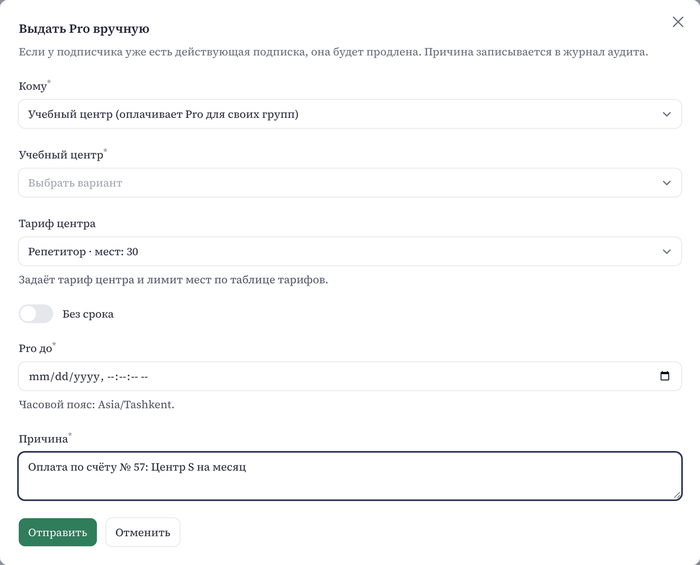
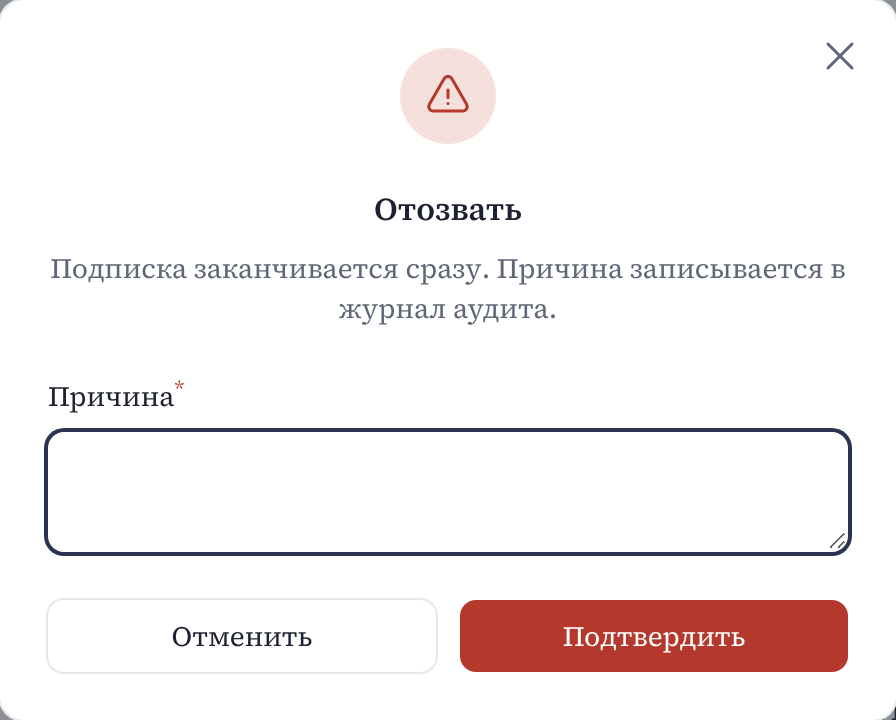

Бесплатный тариф (Free) ограничивает число новых слов в день; Pro снимает ограничения. Раздел Оплата → Подписки показывает все подписки учеников и учебных центров, здесь же администратор вручную выдаёт и отзывает Pro.
| Источник (колонка «Источник») | Как появляется |
|---|---|
| Telegram Stars, Payme, Click | ученик или центр оплатил сам |
| Вручную | выдал администратор кнопкой Выдать Pro |
| Промокод | ученик ввёл промокод (глава «Промокоды») |
| Награда за приглашения | +7 дней Pro за 3 и за 6 засчитанных приглашённых друзей |
| Пробный | пробный Pro нового ученика |
| Pro от центра | подписка самого центра: каждый активный участник его активной привязанной группы получает Pro, пока у центра есть места. У ученика своей подписки при этом нет |
Ученик покупает Pro на месяц, 3 месяца или год. Срок «3 месяца» (90 дней) продаётся ученикам за Telegram Stars и в сумах (Payme, Click); учебным центрам он не предлагается — центр платит за месяц или год. Цены задаёт технический администратор в настройках сервера; если цена в какой-то валюте равна 0, срок в этой валюте не продаётся.
| Срок | Stars (по умолчанию) | Сумы (по умолчанию) |
|---|---|---|
| Месяц | 150 Stars | 29 000 сум |
| 3 месяца | 390 Stars | 75 000 сум |
| Год | 1 300 Stars | 249 000 сум |
Тарифы центров — «Репетитор» (30 мест), «Центр S» (100), «Центр M» (300), «Центр L» (без ограничения мест; продаётся только по счёту, онлайн его не купить). Сменить тариф центра можно только вручную, через Выдать Pro.

Фильтры: статус, источник, тариф, тип подписчика, ученик (по номеру) и «Действие» — действующие или завершённые. Ссылка Открыть в разделе «Подписки» из карточки ученика открывает этот список уже с отбором по ученику.
| Статус | Что значит |
|---|---|
| Пробный период | пробный Pro |
| Активна | Pro действует |
| Ожидает оплаты | срок кончился, идут льготные дни продления; Pro ещё действует |
| Отменена | автопродление выключено; Pro действует до конца оплаченного срока |
| Истекла | Pro больше нет |
Подписки с прошедшим сроком закрываются автоматически раз в час.

/pro в боте; выдать поверх можно, только отметив Понимаю, всё равно выдать.Так активируют центр, который платит по счёту, и тариф «Центр L», и так меняют тариф центра.

Пока подписка центра действует, онлайн он может продлить только текущий тариф. Смену тарифа (доплату или зачёт) договорите с центром и оформите здесь же: Выдать Pro с новым тарифом и сроком.
Кнопка Отозвать в строке действующей подписки. Нужна Причина. Подписка заканчивается сразу, ученик (или все ученики центра) переходит на Free в течение нескольких секунд. Прогресс учеников сохраняется.

Отзыв оплаченной подписки не возвращает деньги. Если ученик просит вернуть оплату, оформляйте возврат в разделе «Платежи» (кнопка «Вернуть деньги»): возврат сам закончит подписку, если ею оплачен текущий период.
Дни промокода или награды за приглашения добавляются к концу действующей подписки. Если у ученика идёт автопродление Stars, эти дни лишь страхуют от неудачного списания: следующее продление Telegram поставит срок по своему расписанию. Если подписка Stars уже отменена, дни продлевают её, и она остаётся отменённой.